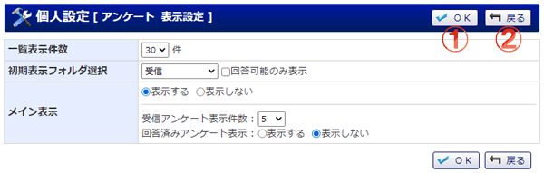

アンケートの表示設定画面です。

機能説明
設定ボタン選択された内容を登録します。 |
戻るボタン遷移元の画面へ遷移します。 |
|---|
表示・入力項目説明
一覧表示件数
1ページに表示するアンケート件数の設定を表示します。
初期表示フォルダ選択
アンケート一覧画面にて初期表示するフォルダを設定します。
メイン表示
メイン画面への受信アンケート表示の有無を設定します。
受信アンケート表示件数
メイン画面に受信アンケートを表示する場合のみ設定することができます。
表示する受信アンケートの最大数を設定します。
回答済みアンケート表示
メイン画面に受信アンケートを表示する場合のみ設定することができます。
回答済みアンケート表示の有無を設定します。